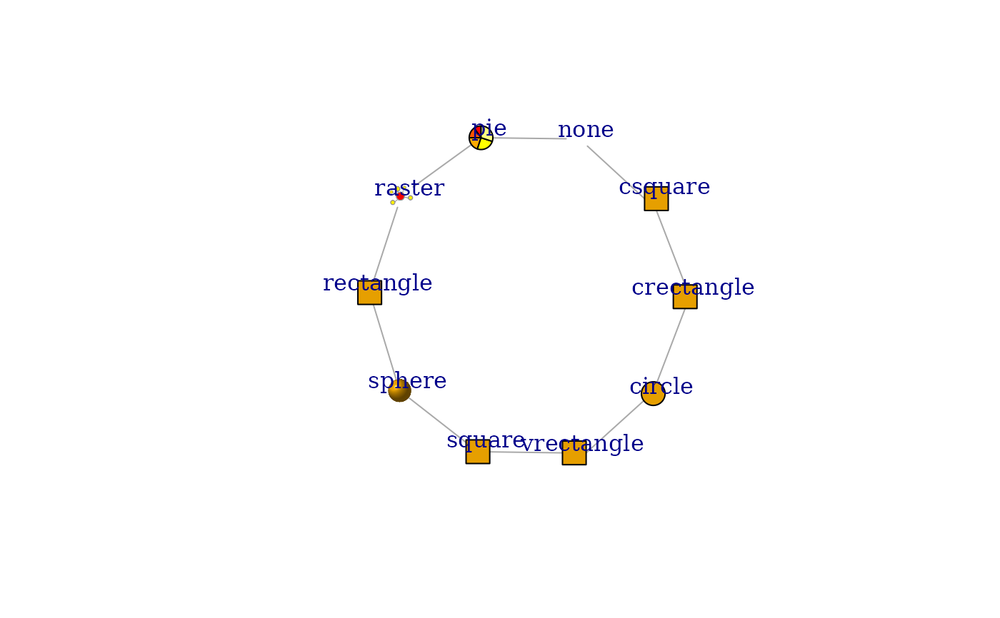
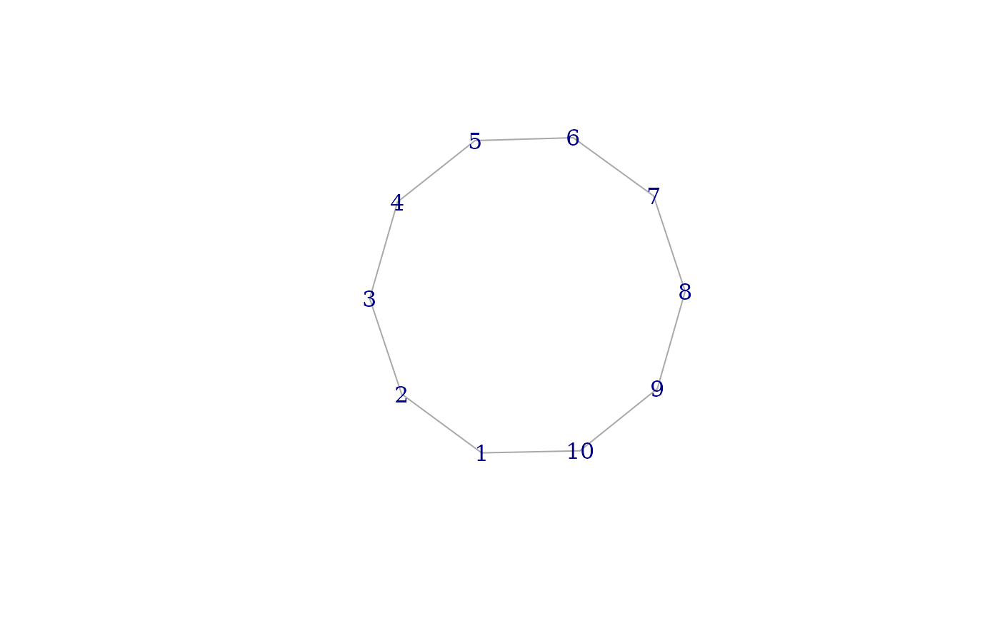
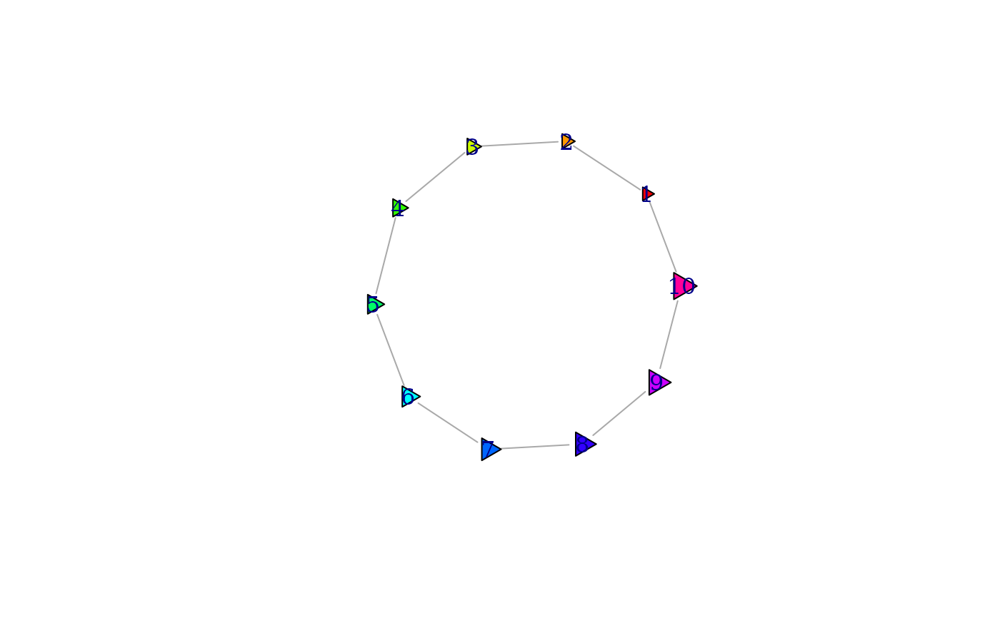
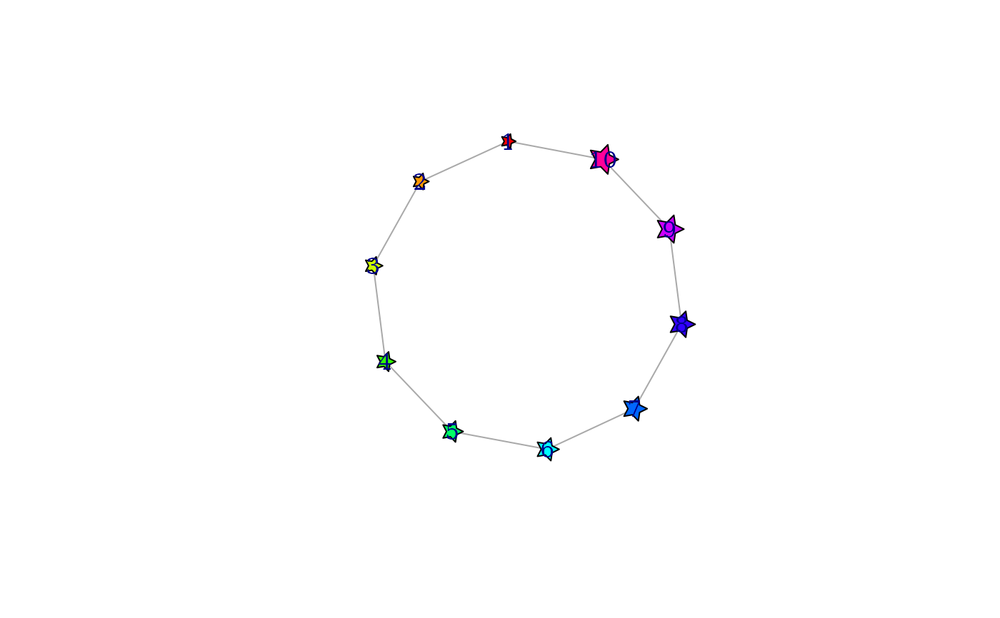
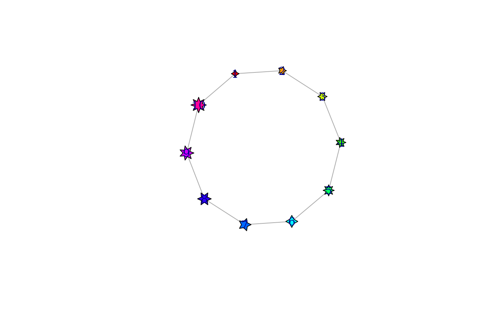

Starting from version 0.5.1 igraph supports different vertex shapes when plotting graphs.
Arguments
- shape
Character scalar, name of a vertex shape. If it is
NULLforshapes(), then the names of all defined vertex shapes are returned.- coords, el, params, end, v
See parameters of the clipping/plotting functions below.
- clip
An R function object, the clipping function.
- plot
An R function object, the plotting function.
- parameters
Named list, additional plot/vertex/edge parameters. The element named define the new parameters, and the elements themselves define their default values. Vertex parameters should have a prefix ‘
vertex.’, edge parameters a prefix ‘edge.’. Other general plotting parameters should have a prefix ‘plot.’. See Details below.
Value
shapes() returns a character vector if the
shape argument is NULL. It returns a named list with
entries named ‘clip’ and ‘plot’, both of them R
functions.
add_shape() returns TRUE, invisibly.
shape_noclip() returns the appropriate columns of its
coords argument.
Details
In igraph a vertex shape is defined by two functions: 1) provides information about the size of the shape for clipping the edges and 2) plots the shape if requested. These functions are called “shape functions” in the rest of this manual page. The first one is the clipping function and the second is the plotting function.
The clipping function has the following arguments:
- coords
A matrix with four columns, it contains the coordinates of the vertices for the edge list supplied in the
elargument.- el
A matrix with two columns, the edges of which some end points will be clipped. It should have the same number of rows as
coords.- params
This is a function object that can be called to query vertex/edge/plot graphical parameters. The first argument of the function is “
vertex”, “edge” or “plot” to decide the type of the parameter, the second is a character string giving the name of the parameter. E.g.params("vertex", "size")- end
Character string, it gives which end points will be used. Possible values are “
both”, “from” and “to”. If “from” the function is expected to clip the first column in theeledge list, “to” selects the second column, “both” selects both.
The clipping function should return a matrix
with the same number of rows as the el arguments.
If end is both then the matrix must have four
columns, otherwise two. The matrix contains the modified coordinates,
with the clipping applied.
The plotting function has the following arguments:
- coords
The coordinates of the vertices, a matrix with two columns.
- v
The ids of the vertices to plot. It should match the number of rows in the
coordsargument.- params
The same as for the clipping function, see above.
The return value of the plotting function is not used.
shapes() can be used to list the names of all installed
vertex shapes, by calling it without arguments, or setting the
shape argument to NULL. If a shape name is given, then
the clipping and plotting functions of that shape are returned in a
named list.
add_shape() can be used to add new vertex shapes to
igraph. For this one must give the clipping and plotting functions of
the new shape. It is also possible to list the plot/vertex/edge
parameters, in the parameters argument, that the clipping
and/or plotting functions can make use of. An example would be a
generic regular polygon shape, which can have a parameter for the
number of sides.
shape_noclip() is a very simple clipping function that the
user can use in their own shape definitions. It does no clipping, the
edges will be drawn exactly until the listed vertex position
coordinates.
shape_noplot() is a very simple (and probably not very
useful) plotting function, that does not plot anything.
Examples
# all vertex shapes, minus "raster", that might not be available
shapes <- setdiff(shapes(), "")
g <- make_ring(length(shapes))
set.seed(42)
plot(g,
vertex.shape = shapes, vertex.label = shapes, vertex.label.dist = 1,
vertex.size = 15, vertex.size2 = 15,
vertex.pie = lapply(shapes, function(x) if (x == "pie") 2:6 else 0),
vertex.pie.color = list(heat.colors(5))
)

# add new vertex shape, plot nothing with no clipping
add_shape("nil")
plot(g, vertex.shape = "nil")

#################################################################
# triangle vertex shape
mytriangle <- function(coords, v = NULL, params) {
vertex.color <- params("vertex", "color")
if (length(vertex.color) != 1 && !is.null(v)) {
vertex.color <- vertex.color[v]
}
vertex.size <- 1 / 200 * params("vertex", "size")
if (length(vertex.size) != 1 && !is.null(v)) {
vertex.size <- vertex.size[v]
}
symbols(
x = coords[, 1], y = coords[, 2], bg = vertex.color,
stars = cbind(vertex.size, vertex.size, vertex.size),
add = TRUE, inches = FALSE
)
}
# clips as a circle
add_shape("triangle",
clip = shapes("circle")$clip,
plot = mytriangle
)
plot(g,
vertex.shape = "triangle", vertex.color = rainbow(vcount(g)),
vertex.size = seq(10, 20, length.out = vcount(g))
)

#################################################################
# generic star vertex shape, with a parameter for number of rays
mystar <- function(coords, v = NULL, params) {
vertex.color <- params("vertex", "color")
if (length(vertex.color) != 1 && !is.null(v)) {
vertex.color <- vertex.color[v]
}
vertex.size <- 1 / 200 * params("vertex", "size")
if (length(vertex.size) != 1 && !is.null(v)) {
vertex.size <- vertex.size[v]
}
norays <- params("vertex", "norays")
if (length(norays) != 1 && !is.null(v)) {
norays <- norays[v]
}
mapply(coords[, 1], coords[, 2], vertex.color, vertex.size, norays,
FUN = function(x, y, bg, size, nor) {
symbols(
x = x, y = y, bg = bg,
stars = matrix(c(size, size / 2), nrow = 1, ncol = nor * 2),
add = TRUE, inches = FALSE
)
}
)
}
# no clipping, edges will be below the vertices anyway
add_shape("star",
clip = shape_noclip,
plot = mystar, parameters = list(vertex.norays = 5)
)
plot(g,
vertex.shape = "star", vertex.color = rainbow(vcount(g)),
vertex.size = seq(10, 20, length.out = vcount(g))
)

plot(g,
vertex.shape = "star", vertex.color = rainbow(vcount(g)),
vertex.size = seq(10, 20, length.out = vcount(g)),
vertex.norays = rep(4:8, length.out = vcount(g))
)
